Remote
Your machines
Connecting…
Remote desktop
Stream and control your machines straight from the browser. Nothing to install on the device you're holding.

Connect to the server running on your Pi.
Remote
How-to
winget install Gyan.FFmpeg
C:\Users\<you>\MazeRemote):
mkdir $HOME\MazeRemote -Force; cd $HOME\MazeRemote iwr https://github.com/mazijoni/maze-remote/releases/latest/download/maze-remote-agent.exe -OutFile maze-remote-agent.exe
notepad maze-remote.json in that folder and paste:
grep MR_HOST_SECRET ~/maze-remote/server/.env (the part after =).
NVIDIA GPU? Use "encoder": "nvenc" for lower latency · AMD "amf" · Intel "qsv"New-NetFirewallRule -DisplayName "Maze Remote agent" -Direction Inbound -Program "$HOME\MazeRemote\maze-remote-agent.exe" -Action Allow -Profile Any
iwr https://builds.parsec.app/vdd/parsec-vdd-0.41.0.0.exe -OutFile $env:TEMP\parsec-vdd.exe Start-Process $env:TEMP\parsec-vdd.exe -ArgumentList '/S' -Verb RunAs -Wait
cd $HOME\MazeRemote; .\maze-remote-agent.exe
online as "My PC" and the PC appears here. Keep the window open. If SmartScreen warns, click More info → Run anyway.cd ~/maze-remote && git pull && sudo systemctl restart maze-remote
bash ~/maze-remote/scripts/pi-agent.sh
sudo raspi-config nonint do_wayland W1 && sudo reboot
bash ~/maze-remote/scripts/pi-camera.sh
"rotation": 180 in ~/maze-remote-agent/maze-remote-camera.json, then sudo systemctl restart maze-remote-camera.MR_PASSWORD, save with Ctrl+O, exit with Ctrl+X:
nano ~/maze-remote/server/.env && sudo systemctl restart maze-remote
MR_HOST_SECRET — your machines use it to connect.journalctl -u maze-remote -n 15 --no-pager # server — look for "TURN relay: Cloudflare" systemctl status cloudflared --no-pager # remote.maze-development.com tunnel tail ~/maze-remote-agent/agent.log # the Pi's own agent
TURN relay: Cloudflare (Pi tab, step 4). Then sign out and in again so the browser gets the relay details.Preferences
—Keyboard
Typed on the remote PC as if you'd entered it on its keyboard.